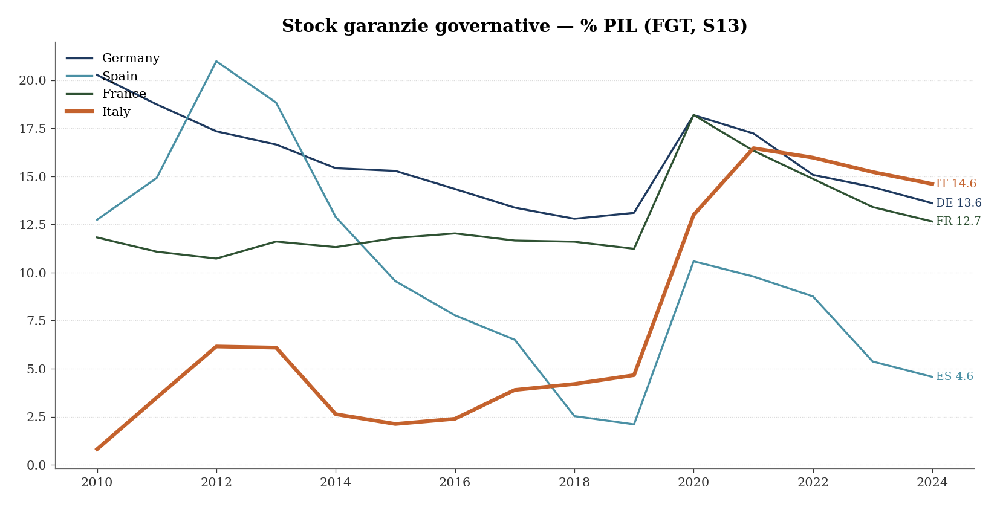
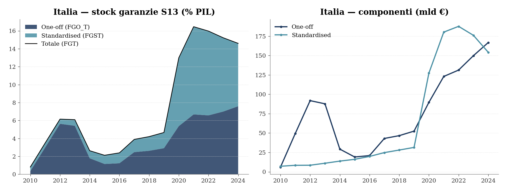

Public credit guarantees to firms: an overview
From the European framework to the map of national and regional instruments, with a focus on the Mezzogiorno
Paolo Volterra ![]()
Public credit guarantees are the instrument through which the state assumes part of the credit risk of firms in order to relax financing constraints. This note moves from the European framework (OECD/World Bank definitions, Eurostat data on contingent liabilities) to the operational question: which guarantees - national or regional - currently support firm credit in Italy, and how are they distributed territorially? Italy ranks third in the EU by public guarantees relative to GDP (14.6% in 2024), and the stock is not unwinding: it is being re-composed from the Fondo di Garanzia toward SACE. The system has three layers (mass-market FCG, SACE for large firms/export, regional capillary schemes); the Mezzogiorno relies almost entirely on the national channel, whose Southern share rose to 32.5% in 2025.
public credit guarantees, CGS, Guarantee Fund, SACE, Mezzogiorno, Eurostat, RNA, mutual guarantees
Versione citabile su Zenodo, con il PDF: doi.org/10.5281/zenodo.21173328. On Zenodo the paper is published in English only.
JEL codes: G21, G28, H81, R58
1 What Do We Mean by Public Guarantees?
In autumn 2025 the Court of Audit drew attention to a number that few people knew: the Italian state guarantees almost three hundred billion euros of loans, and each year part of these guarantees is actually paid to banks on behalf of firms that fail to repay (Corte dei Conti 2025). The warning entered the public debate (Trovati 2025), while the government was preparing new access rules for the main instrument, the Fondo di Garanzia for SMEs (Serafini 2025). It is therefore useful to set out the basics: what these guarantees are, how large they are, who provides them, and who receives them.
The starting point is a standard credit-market problem. Small firms are opaque: banks struggle to assess their creditworthiness and ask for collateral in return. But collateral is precisely what small firms often lack. A public guarantee steps in here: a third party, backed by public resources, commits to cover part of the loss if the firm defaults. It does not transfer cash to the firm; it provides the collateral the firm does not have. For this reason, the literature treats it as the most widespread credit policy instrument worldwide: the OECD finds variants in almost all advanced economies and in many emerging economies, ranging from fully state-run schemes to mutual guarantee societies formed by entrepreneurs themselves (Cusmano 2018). Italy knows the latter well through the confidi, which will reappear below as part of the regional framework. Evidence that the mechanism matters for credit access also comes from Indonesia: micro and small firms without guarantees simply remain outside formal credit markets, especially in rural areas (Wardhono et al. 2019).
The literature also points to two distinctions that matter throughout the note. The first is between financial additionality and economic additionality: it is one thing to show that a guarantee generates credit that would not otherwise exist, and another to show that this credit produces additional investment and employment. Serious evaluations usually find the first; the second is much harder to establish (Cusmano 2018). The second distinction concerns sustainability: a guarantee is cheap at the moment of issuance and comes due years later, when defaults materialise. To address this aspect, the World Bank set out sixteen principles for public guarantee schemes - independent governance, risk-based pricing, systematic additionality assessment - yet their actual implementation remains highly uneven in a global survey (Calice 2016). These are useful criteria to keep in mind when we later turn to Italian guarantee calls. For the international comparison, the OECD also publishes an annual SME finance scoreboard that includes guarantee instruments (OECD 2026).
2 The European Framework
2.1 How They Are Measured
Cross-country comparison requires a common definition, and that is provided by European national accounts. Under ESA 2010, guarantees issued by government are contingent liabilities: they are not debt, because the state pays only if the borrower defaults, but Eurostat records them every year using the same criteria for all countries (dataset gov_cl_guar). The classification distinguishes standardised guarantees, namely mass-market schemes that cover many small exposures under uniform rules - in Italy, the SME Guarantee Fund and the first-home guarantee - from one-off guarantees, case-by-case commitments to large firms, banks or export operations. This distinction is not merely bureaucratic: the two components reflect different policy choices, and in Italy they have been moving in opposite directions. Building on this statistical basis, we had already produced an initial account of the Italian stock in autumn 2025 (Volterra 2025); the figures below update that account with end-2024 data.
2.2 The 2020 Surge and What Remains
When the pandemic shut down economies, public guarantees became the main European instrument to support firm liquidity. The scale was unprecedented: already in April 2020, guarantees announced by European states exceeded EUR 1,600 billion, compared with roughly EUR 470 billion in the United States - a gap that reflects the centrality of bank credit in European firm finance (Brault and Signore 2020). The same study, based on EIF programs in the 2002-2016 period, explains why governments turned to guarantees with confidence: among guaranteed SMEs, failures fell by roughly one third in France and by about one half in Benelux countries, Italy and the Nordic countries.
In the ECB box on national schemes from summer 2020, Italy was not yet an outlier. Volumes were in line with the average (EUR 55 billion disbursed, about 4% of non-financial corporation debt, compared with 11% in Spain); the difference was the number of operations, which was very high, with small ticket sizes, consistent with use by micro firms (European Central Bank and Banca d’Italia 2026).

Figure 1: Government guarantee stock, % of GDP - Italy, France, Germany, Spain (Eurostat gov_cl_guar, FGT S13)
The comparison with the other large countries, five years later, shows a different trajectory. Before 2020, Italy was a low-guarantee country: 4.7% of GDP in 2019, above only Spain and well below Germany (13.1%) and France (11.2%). The emergency reversed the ranking, and the reversal persisted: since 2021 Italy has led the group of four and by end-2024, at 14.6% of GDP, ranked third in the EU, behind the Netherlands and Finland. Meanwhile Spain has unwound six percentage points of GDP in guarantees and France more than five; the Italian stock, relative to GDP, has fallen mainly because the denominator grew.

Figure 2: Italy: stock components (one-off vs standardised) - Eurostat
The internal composition of the stock explains this outcome. The standardised component, essentially the Guarantee Fund, has fallen by EUR 33.5 billion from the 2022 peak as Covid-era loans mature. The one-off component, largely SACE, has increased by EUR 35.6 billion over the same period. The end-2024 total (EUR 321 billion) is still 98.5% of the all-time high, reached in 2023 rather than in the emergency year itself. The most appropriate reading is recomposition: the state is substituting mass guarantees for SMEs with targeted guarantees for large operations. The Italian Observatory on Public Accounts reaches the same conclusion when discussing MEF data: values remain high, and about EUR 110 billion of the EUR 294 billion reported by the ministry are still directly inherited from Covid measures (Capacci, n.d.).
The Court of Audit long series confirms the trajectory and makes the end-of-cycle comparison easier to read:
| Year | Public guarantee stock | % of GDP |
|---|---|---|
| 2018 | 74.4 bn | 4.2% |
| 2019 | 85.8 bn | 4.8% |
| 2020 | 215.4 bn | 12.9% |
| 2021 | 288.5 bn | 15.7% |
| 2022 | 312.1 bn | 15.6% |
| 2023 | 300.0 bn | 14.1% |
| 2024 | 294.0 bn | 13.4% |
This reading is consistent with the rest of the note: in 2024 the stock remains elevated, but most of the recent dynamics reflect the gradual exit from the emergency and the recomposition between ordinary guarantees and guarantees created during Covid and the energy crisis.
2.3 The Bill Comes Later: Escussioni and Financial Stability
A guarantee becomes costly when it is escussed, that is, when the bank asks the state to pay on behalf of the defaulting firm. In 2024 escussioni reached EUR 2.452 billion, of which EUR 1.668 billion on the Guarantee Fund alone: relative to the FCG stock this implies an annualised rate of about 1.5%. This is the phenomenon highlighted by the Court of Audit, together with a less visible but serious issue, the improper use of guarantees by borrowers who were not eligible (Corte dei Conti 2025). To read these figures properly, one also needs the Bank of Italy’s methodological guide on credit quality (Banca d’Italia 2023).
Two elements temper the more alarmist readings. The first is historical: the wave of NPLs many expected at the end of the Covid moratoria - the “NPL tsunami” - did not materialise, also because of the combination of guarantees, moratoria and income supports; the problem identified by the authors was not the existence of the measures but the orderly way in which they were withdrawn (Martin et al. 2022). The second is analytical: a recent study on Portugal, which used sovereign guarantees on a large scale, finds that effects on financial stability depend crucially on scheme design - coverage, pricing and screening - rather than on the volume of guarantees (Lorenzo Buratta and Pinheiro 2026). Again, the World Bank principles apply: the fiscal risk is not in the instrument itself but in the way it is governed.
3 National Instruments
The operational question is which guarantees currently support firm credit in Italy. The system can be described as a three-layer structure: a mass-market instrument for SMEs, a channel for large firms and exports, and a dense regional layer. The first two are national.
3.1 The SME Guarantee Fund
The Fondo Centrale di Garanzia, managed by Mediocredito Centrale on behalf of the Ministry of Economy and Finance and the Ministry for Enterprises, is the mass-market instrument: it currently covers about 14.5% of Italian firm loans, according to Bank of Italy AnaCredit data. After the emergency peak - EUR 123 billion in approvals in 2020 alone - annual flows stabilised at EUR 43-46 billion in 2024-25. In the state-aid register it accounts for 93.5% of all guarantee operations recorded in 2025: when one speaks about public guarantees for Italian SMEs, one is effectively speaking about the Fund.
Some common beliefs need correcting. First, on loan purpose: in volume terms, the Fund mainly finances medium- to long-term investment (83-90% of approvals in 2023-25); pure liquidity predominates only in terms of number of operations, because cash loans are small and numerous. The high “liquidity” season was an emergency-specific regulatory episode - the so-called Lettera M introduced by the Liquidity Decree of 2020 - and ended in 2022.
The recent composition of guarantee-type RNA aid also changes markedly by firm size:
| Size | 2023 | 2024 | Reading |
|---|---|---|---|
| Large firm | 39% | 8% | In 2023 Garanzia Italia dominates; in 2024 the centre of gravity shifts decisively toward SMEs. |
| Medium firm | 22% | 26% | Medium firms gain weight in the post-emergency period. |
| Small firm | 24% | 38% | Small firms become the largest group in 2024. |
| Micro firm | 15% | 29% | Micro firms absorb a growing share of the flow. |
The second point concerns borrower quality. One might fear that a generous public guarantee pushes banks to unload worse borrowers onto the state. The microeconometric evidence points in the opposite direction: during Covid, guaranteed loans went to firms that were on average safer but liquidity constrained, often with an established banking relationship, and years later they show fewer defaults than non-guaranteed loans; statistical tests do not find signs of adverse selection (Bonaccorsi di Patti et al. 2024). The pre-Covid picture was less flattering but informative: the regression-discontinuity evaluation of the Fund found additionality on credit - firms just above the eligibility threshold received more loans - but no measurable effect on investment (Blasio et al. 2018). This is the OECD distinction revisited in the Italian case: financial additionality exists, economic additionality has to be demonstrated case by case. An international benchmark helps calibrate expectations: for Turkey’s CGF, one of the world’s largest schemes, positive effects on credit, employment and survival are concentrated in the first years and among more financially constrained firms (Akcigit et al. 2024).
3.2 SACE: From Large Firms to Export
The second layer is SACE. During the emergency it operated Garanzia Italia (DL 23/2020), the counterpart of the Fund designed for firms above the FCG size limits, with a ceiling of about EUR 200 billion, equal to 11% of GDP. The empirical literature suggests that the firms using it were weaker than others even before the pandemic - more leveraged, less profitable - but in subsequent years recovery came through a restoration of profitability, not through artificial survival at the expense of the guarantor (Bajo et al. 2026). In the state-aid register Garanzia Italia is visible only between 2021 and 2023, for about EUR 75 billion in total nominal approvals; after that the scheme closes and the residual enters a long run-off phase.
An element that does not emerge from state-aid registers is SACE’s ordinary activity - export credit, guarantees on international operations and the Archimede programme - which operates at market conditions, does not constitute aid and therefore never appears in the RNA. This component is the largest in the DFP stock (4.3 percentage points of GDP) and is also the one that is growing. The expanding part of the system is therefore the least traceable through standard aid-monitoring tools, with important methodological implications.
The agricultural guarantee for firms is provided by ISMEA and is marginal in volume. SIMEST’s internationalisation funds, by contrast, provide subsidised loans and grants, not guarantees.
4 Regional Guarantees
Regions require a distinction, because the label “regional guarantees” covers two different channels, and conflating them leads to wrong conclusions.
4.1 First Channel: Regional Resources
The first channel consists of guarantees issued with regional, own or EU resources. Three groups of actors are involved. Direct regional administrations: Lombardy, through the Economic Development Directorate, is the leading regional guarantor in Italy, with almost 23,000 operations and more than EUR 900 million in guaranteed nominal value since 2017. In-house regional development agencies, the operational arms of regional governments: Veneto Innovazione, Puglia Sviluppo, Finpiemonte and Sviluppo Campania. And confidi, the Italian mutual guarantee societies - the domestic version of the mutual guarantee societies described by the OECD (Cusmano 2018) - which appear in the aid register when they channel regional or chamber-of-commerce public resources: Confidimprese FVG, Cofidi.it, Confidi Trentino, Artigiancredito, Fidicoop Sardegna and many others.
Taken together, this first channel amounts to between EUR 0.6 and 1.1 billion in nominal guarantees per year: 2-3% of the guarantee flow captured by RNA. Small in volume, but not irrelevant, for two reasons. First, geography: the regional channel is strongly concentrated in the North-East, Lombardy and Puglia, the only Southern region with a robust system. Second, intensity: in Lombardy the aid element embedded in guarantees reaches 13.6% of nominal value, versus 3-6% in the other regions and 1-2% for the Fund. The Lombard schemes evidently include much more generous components - free counter-guarantees, fee waivers - and deserve a dedicated follow-up.
4.2 Second Channel: National Guarantees Targeted at Territories
The second channel works in the opposite direction: regions are not the guarantors, but the state allocates portions of the Fund to specific territories. The FCG operates through reserves and special sections, financed by EU cohesion funds or regional co-financing, which steer its resources. Loan-by-loan data from Mediocredito Centrale allow us to quantify the phenomenon for decisions taken since 2021:
| Channel | Operations | Financing |
|---|---|---|
| Ordinary FCG | 1,392,641 | 254.2 bn |
| Regional co-financed sections - Centre-North (Veneto, Tuscany, Piedmont, Emilia-Romagna, Marche…) | 589,413 | 30.3 bn |
| National reserves for the South (PON R&C returns, PN RIC 2021-27, Resto al Sud) | 99,071 | 17.8 bn |
| Regional co-financed sections - South (Sicily PR FESR…) | 22,936 | 3.3 bn |
Two points are relevant. Regional co-financed sections amount to EUR 33.6 billion, but nine tenths belong to the Centre-North: even within the national Fund, the regional channel reproduces the geography of the first channel. The main instrument through which the state directs guarantees to the Mezzogiorno does not pass through regions: it is the set of national reserves on cohesion funds - PON Ricerca e Competitivita returns, PN RIC 2021-27, Resto al Sud - that have moved EUR 17.8 billion in financing since 2021.
To reconstruct the full map, the sources play different roles: OpenCoesione records the envelopes of financial instruments created with cohesion funds (which region created which fund, with what resources, in which programming cycle); RNA records the individual grants to firms; MCC data track the decisions of the Fund, including special sections. None of the three sources is sufficient on its own.
5 The Mezzogiorno
Three points emerge for the Mezzogiorno.
The first is a pandemic paradox. In 2019, the South accounted for 27.6% of the Fund’s financed volume; in 2020, the record year, its share fell to 20.6% because the extraordinary demand for guarantees came mainly from the Centre-North manufacturing base. Since then the Southern share has risen year after year, surpassing its pre-pandemic level in 2025:
| year | 2019 | 2020 | 2021 | 2022 | 2023 | 2024 | 2025 |
|---|---|---|---|---|---|---|---|
| % FCG financing in the South | 27.6 | 20.6 | 20.8 | 26.3 | 29.1 | 31.0 | 32.5 |
Put differently: the ordinary Fund is a more Southern instrument than the emergency one. Reading the Covid experience as representative of the territorial role of guarantees risks understating the weight of the South.
The second point is dependence on the national channel. As noted above, the true regional layer - regional funds, development agencies, confidi - is predominantly Northern, with the exception of Puglia. A firm in Lombardy looking for a guarantee has three doors in front of it: the Fund, regional schemes, and its confidi. A firm in Calabria or Molise usually has one: the Fund, eventually enhanced by cohesion reserves.
The CdC table on the territorial profile of guarantee-type aid allows this to be quantified:
| Area | 2023 | 2024 | Reading |
|---|---|---|---|
| North | 46% | 49% | The North remains dominant. |
| Centre | 34% | 17% | The Centre loses weight after the 2023 peak. |
| South | 14% | 22% | The Mezzogiorno regains ground in 2024. |
| Islands | 5% | 9% | The Islands grow but remain minor. |
| Multi-region | 2% | 3% | Residual share. |
The third point is that the rebalancing instrument already exists and is sizeable: the EUR 17.8 billion of national reserves for the South show that territorialisation of the Fund operates at meaningful scale. Open questions are whether the 2021-27 cycle can replace the PON returns that are now being exhausted, and whether the Southern PR FESR sections - currently at EUR 3.3 billion - can move closer to Northern levels.
6 Looking Ahead
The debate on public guarantees is not only about the legacy of Covid. Prospectively, the ECB and recent literature discuss whether publicly guaranteed loans can support the green transition by shifting credit away from fossil activities - still widely financed by banks - toward investments consistent with climate objectives (Buchetti et al. 2024). This is particularly relevant for Italy, which has a well-established guarantee infrastructure. On the household side, the Consap guarantee on first-home mortgages follows similar logics but lies outside the scope of this note (Cavestri 2025).
Several concrete questions remain for future work: closing the statistical gap between DFP and Eurostat on post-Covid financial items; explaining the unusually high aid intensity in Lombardy; measuring, at firm level, the overlap between the Fund and regional channels (RNA makes this possible by matching tax codes); and assessing the actual capacity of PN RIC 2021-27 for the Mezzogiorno.
7 Operational Map
To orient the reader, the table below maps the main instruments and the data source where each one appears.
| Instrument | Guarantor | Beneficiaries | Where it appears in the data |
|---|---|---|---|
| Ordinary FCG | State (MCC) | SMEs and mid-caps, nationwide | MCC loan-by-loan; RNA (93.5% of guarantees); AnaCredit |
| Regional special sections of the FCG | State + region (FESR co-financing) | firms in the region | MCC riserva field; OpenCoesione (envelopes) |
| National reserves for the South | State (cohesion funds) | firms in PON / Resto al Sud regions | MCC riserva field; OpenCoesione |
| Garanzia Italia | State (SACE) | large firms (2020-22, closed) | RNA 2021-23; DFP (residual run-off stock) |
| SACE ordinary/export | SACE (market) | exporters, large projects | DFP and Eurostat; not in RNA |
| Direct regional funds | Region / in-house agency | firms in the region | RNA (regional grantor); OpenCoesione |
| Confidi with public resources | Confidi | micro and small firms, territorial base | RNA (confidi grantor) |
| ISMEA | State | agricultural firms | RNA (marginal) |
8 Sources and References
Data
- Eurostat,
gov_cl_guarandgov_cl_npl- government guarantees and NPLs, ESA 2010 contingent liabilities, EU comparison (latest year: 2024). - MEF, 2025 Documento di Finanza Pubblica, Table II.4.2.1 - national stock of guarantees granted (EUR 294 bn at end-2024).
- Court of Audit, Quaderno 2 of the 2025 Report on the Coordination of Public Finance - stock, escussioni, improper use, managers (Corte dei Conti 2025).
- RNA - Registro Nazionale Aiuti, monthly open data - flow of aid grants; for 2025, cleaned nominal value EUR 69.2 bn (three loading errors inflated the gross figure by EUR 18.9 bn).
- Mediocredito Centrale, loan-by-loan data on the Guarantee Fund - 4.47 million decisions since 2012, including reserves and special sections.
- Bank of Italy, Annual Report 2025 (AnaCredit data) - share of firm loans covered by a public guarantee.
Literature and cited documents
- Cusmano (2018) - OECD taxonomy of CGS and mutual guarantee societies; financial vs economic additionality.
- Calice (2016) - the World Bank’s 16 principles for public schemes and the survey of their implementation.
- OECD (2026) - OECD SME finance scoreboard.
- Brault and Signore (2020) - scale of Covid guarantee schemes (EU vs US) and pre-Covid evidence on growth and failure rates.
- European Central Bank and Banca d’Italia (2026) - ECB box (Economic Bulletin 6/2020) on national schemes during the emergency.
- Bonaccorsi di Patti et al. (2024) - allocation of guaranteed Covid loans in Italy: no adverse selection.
- Blasio et al. (2018) - RDD evaluation of the pre-Covid Fund: additionality on credit, not on investment.
- Akcigit et al. (2024) - firm-level effects of the Turkish CGF scheme.
- Bajo et al. (2026) - Garanzia Italia and the recovery of large firms.
- Martin et al. (2022) - why the NPL tsunami did not happen and how to manage the withdrawal of measures.
- Lorenzo Buratta and Pinheiro (2026) - sovereign guarantees and financial stability: scheme design matters.
- Buchetti et al. (2024) - guaranteed loans and the green transition.
- Wardhono et al. (2019) - guarantees and access to credit for micro firms in Indonesia.
- Capacci (n.d.) - the OCPI comment on the persistence of the stock.
- Trovati (2025); Serafini (2025); Cavestri (2025) - the news cycle: the Court’s warning, the upcoming reform, and the household mortgage front.
- Banca d’Italia (2023) - methodological guide on credit quality.
Full bibliography in OUT/references.bib; supporting analytical notes in OUT/01-16 of the project.
Transparency on AI Use
The use of generative AI tools is explicitly disclosed as part of the workflow used to draft this document. Such tools were used to support reading, synthesis, argumentative reorganisation and text revision, always within a fully controlled authorial process.
Responsibility for the sources used, the analyses performed, the checks carried out, the interpretations proposed and the conclusions drawn remains entirely with the author.
Generative AI was used as a cognitive and editorial support environment, not as a primary source, autonomous author, or substitute for critical judgement.